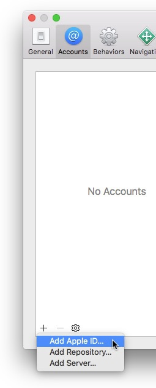
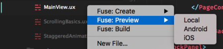
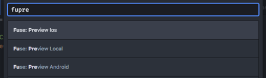

Preview and Export
Fuse offers two ways of running your app:
- Preview - A fully working build of your app, which also updates in real-time as you make changes to your UX markup or JavaScript.
- Export - The final version of your app, which can be shipped to app stores or used for private testing.
When developing your app, you typically work in preview all the time, to be able to iterate quickly. Then you export when you want to deploy it. Note that in some scenarios, preview performance can be a bit slower than in export.
Fuse Preview app
This stand-alone app is by far the simplest way of previewing your projects and does not require the installation of Xcode or the Android SDKs. It also lets you preview on iOS devices while developing on a Windows computer.
You can use the preview app as long as your project only contains UX markup, JavaScript and the standard Fuse packages (including Pro features / Premium libs), but excluding Fuse.PushNotifications.
If your project contains .uno files or custom / 3rd party packages then you must instead build your own custom preview.
Preview App Setup
You can download the app for Android from Google Play and for iOS from the Apple App Store.
To run a preview first make sure your test device and development computer are on the same wifi. Then open your project in Fuse and click the "Devices" button in the upper right corner. This will open a window containing the necessary information for connecting the preview. Follow the instructions inside the app to either scan the QR code or manually enter the IP and code.
Check out this video to see how it's done! fuse preview app
Export and custom preview
Android setup
To be able to preview or export to Android, you need to install the required SDK components. Pull up your terminal and run the following:
fuse install android
(You do not need sudo on macOS)
This will attempt to locate existing Android SDK components, and install them if necessary.
If you are running Windows you also need to install the right USB driver for your device. A list of drivers for common vendors, as well as instructions to install them can be found here.
Also on your android device itself you will need to enable 'developer options' & 'USB debugging'. For info on how to do this please see the official docs here.
iOS setup
You will need Mac OS X and Xcode to preview and export your app to iOS.
You also need to create a free Apple Developer account and register it under Xcode's settings as shown below.

Custom Preview
We can easily preview apps both locally and on Android/iOS devices while getting immediate feedback on changes to the UX markup and JavaScript.
These are the instructions for building your own custom preview. If your app project does not contain .uno files or custom packages you can use the Fuse Preview app instead (without having to install Xcode or Android SDKs).
Note: When running preview for iOS, Fuse doesn't run your app directly, but will open the project in Xcode. From there, press the "play" button to run the preview session.
When we open a project in Fuse, it starts in preview mode inside the tool. Users with a Fuse Pro license will also see visual tools to inspect and modify the app. To start preview on a device, use the "Preview" menu.

You can start preview on as many devices as you like. A USB connection is only required when starting preview, after that all changes are streamed over wifi.
Preview from editor plugins
Preview can also be launched from one of our editor plugins. Select preview target Android/iOS to launch on a device, or local to open it in Fuse.
Preview from Sublime Text
To preview from sublime text, right-click any ux or unoproj file in the sidebar and select your target platform under the Fuse: Preview menu.

We can also start preview from the command palette. Press Cmd+Shift+P (OS X) or Ctrl+Shift+P (Windows) to bring up the palette, and type Fuse Preview to see a list of preview targets.

Preview from Atom
Press Cmd+Shift+P (OS X) or Ctrl+Shift+P (Windows) to bring up the command palette, and type Fuse Preview to see a list of preview targets.

Preview from command line
In your terminal, cd to the your project's directory, and run the command that corresponds to your build target.
fuse preview -t=Android
fuse preview -t=iOS
fuse preview -t=Local # The -t=Local flag is optional in this case
We can get further documentation on fuse preview by running fuse help preview.
Export
When exporting your app, your UX markup is compiled to native C++ code, meaning that you lose the ability to preview your app in real time. However your app will function on its own, without a network connection back to your computer. Performance is also better in many cases. This is what you want when distributing your app.
The simplest way to export is to use the "Export" menu in Fuse. However, the command line provides more options.
Android
In the project root, run the following command in your shell:
fuse build --target=Android --run
This will deploy and start the project on your connected Android device.
To make a release build, run:
fuse build --target=Android --configuration=Release
Note: to export your app to the Google Play Store, you need to sign it first.
iOS
In the project root, run the following command in your shell:
fuse build --target=iOS --run
If you instead want to open the generated project in Xcode, run fuse build --target=iOS -adebug
To make a release build, run:
fuse build --target=iOS --configuration=Release
Note: to export your app to the App Store, you need to sign it first.
Signing
See the signing article for a guide on signing your app for release.